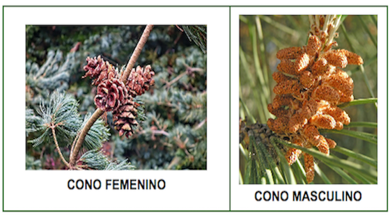
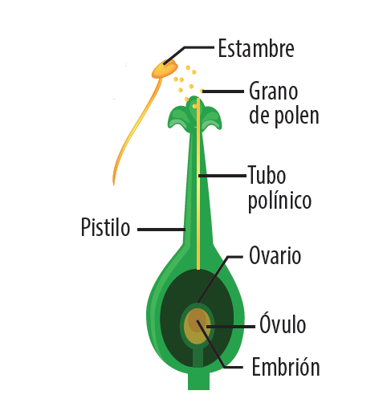
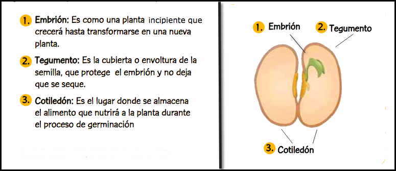
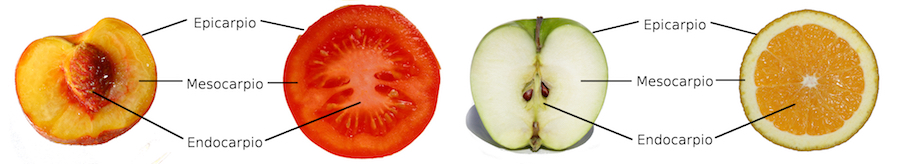
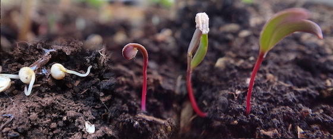

Reproducción vegetal
Una función importante de las plantas es reproducirse. En estado natural, la mayoría de las plantas producen semillas que pueden crecer y convertirse en plantas nuevas. Otras, como los musgos y helechos, se reproducen formando células diminutas llamadas esporas que crecen y se convierten plantas nuevas.
En las plantas podemos observar dos tipos de reproducción:
- Asexual. Las plantas se forman a partir de un fragmento del progenitor (tallos, hojas, etc). Al intervenir un solo progenitor los nuevos individuos serán genéticamente idénticos a él.
- Sexual. Intervienen dos órganos reproductores, uno masculino y otro femenino. Cada uno de ellos produce un tipo de célula sexual o gameto. Los descendientes tendrán características similares a sus progenitores. Esto es lo que sucede cuando las plantas se reproducen mediante las flores.
Dentro de estas dos formas de reproducción de las plantas existen muchas variedades. En esta sección veremos diversos ejemplos de reproducción asexual, y descubriremos cómo se reproducen sexualmente las angiospermas y las gimnospermas.
Ahora tú. Investigamos la reproducción asexual
Actividad 1
Nos informamos
La reproducción asexual es muy habitual en las plantas y ofrece una gran variedad de formas. Las más comunes son las siguientes:
- Reproducción por esporas. Las esporas son unas células especiales que cuando caen suelo, si las condiciones son las adecuadas, pueden originar nuevos individuos. Los musgos y los helechos se reproducen habitualmente por este sistema, que alternan con la reproducción sexual.
Hacemos clic en la imagen para verla ampliada.
- Reproducción vegetativa. Una parte de la planta se divide y se desarrolla por separado hasta convertirse en una nueva planta, puede ser:
- Natural: la realizan las plantas por sí solas. Tiene lugar mediante diversos tipos de tallos que permiten a las plantas resistir los periodos desfavorables. Son ejemplos los rizomas, los estolones, los tubérculos y los bulbos.
- Artificial: es controlada por el ser humano. En agricultura y jardinería se recurre a ella para obtener muchas plantas en poco tiempo utilizando técnicas como los esquejes, los injertos y los acodos.
Aprendemos con vídeo
Visualizamos el vídeo y respondemos a las siguientes cuestiones en nuestro cuaderno o en Google Drive:
Canal de vídeo en Youtube de la Eduteca. La reproducción asexual de las plantas.
1. ¿Cuáles son las características de la reproduccion asexual?
2. ¿Qués son los rizomas?, ¿y los tubérculos?
3. Citamos dos utilidades de la reproducción asexual en agricultura.
Investigamos
Las fresas son capaces de generar estolones y los rosales pueden reproducirse mediante esquejes. Buscamos más ejemplos de reproducción vegetativa y completamos, en nuestro cuaderno de clase o en  Google Drive, una tabla similar a esta:
Google Drive, una tabla similar a esta:
| NOMBRE E IMAGEN | ¿EN QUÉ CONSISTE? | ¿PARA QUÉ SE USA? |
|
|
Consiste en unir una parte de una planta a otra. El resultado es un individuo autónomo formado por dos plantas diferentes. |
Se usa fundamentalmente en el cultivo de árbole sfrutales |
| TUBÉRCULOS | ||
| BULBOS | ||
| ESQUEJES | ||
| ACODOS | ||
| RIZOMAS | ||
| ESTOLONES |
Ahora en equipo. Reproducción sexual de las plantas con flores
Actividad 2
En estas plantas, llamadas ESPERMATOFITAS, la FLOR es el órgano de la reproducción y se clasifican en dos grandes grupos:
- Angiospermas
-
Las semillas que se originan están protegidas por el fruto como en el manzano y la judía.
Las partes de la flor de una angiosperma son: el cáliz, la corola, los estambres y el gineceo.
-
El cáliz está formado por unas hojas pequeñas de color verde que se llaman sépalos.
-
La corola está formada por los pétalos, que son hojas de colores brillantes. Esos colores atraen a los insectos. El cáliz y la corola son las partes protectoras de la flor.
-
Los estambres son como unos hilitos y en ellos se forman los granos de polen (células masculinas). Son la parte masculina de la flor.
-
El pistilo o gineceo ocupa el centro de la flor. En él se encuentran los óvulos (células femeninas) dentro del ovario. Es la parte femenina de la flor.
Los estambres y el gineceo son las partes reproductoras de la flor.
-
- Gimnospermas
-
Las semillas que se originan están “desnudas”, NO están encerradas dentro de un fruto.
El pino piñonero es una planta gimnosperma. Sus semillas, los piñones, están protegidas por una cáscara dura. ¿Por qué decimos, entonces, que están ”desnudas” o sin protección? La razón es la siguiente: no están envueltas en un fruto, aunque parezca que las piñas son sus frutos, en realidad no lo son. Para que se forme un fruto es preciso que la planta tenga ovario, es decir, un recipiente que, además de alojar al óvulo, se transforme en fruto después de la fecundación. Las gimnospermas carecen de ovario y, por tanto, no pueden formar frutos.
La flor de una gimnosperma es muy sencilla, no tiene ni pétalos ni sépalos. La mayoría son unisexuales, es decir, en una misma planta hay flores masculinas y flores femeninas distintas, aunque en el mismo pié de planta.
- Las flores femeninas están agrupadas en conos verdosos que luego se vuelven leñosos de color marrón llamadas piñas (falsos frutos) que al abrirse sueltan los piñones, las semillas de los pinos.
- Las flores masculinas están agrupadas en conos de menor tamaño que contienen sacos llenos de polen con flotadores que les ayudan a dispersarse por el viento.
En esta ficha del Real jardín Botánico podemos visualizar más conos masculinos y femeninos de diversas gimnospermas.
- Nos ponemos a prueba
Ahora en equipo. Etapas del proceso de la reproducción sexual
Actividad 3
Durante la reproducción sexual de las plantas podemos distinguir diversas etapas resumidas en el siguiente esquema:
Wikipedia. Fases del ciclo reproductivo en angiospermas. Autora: Mariana Ruiz con licencia CC BY.
Nos informamos
- Polinización
-
Es el transporte del grano de polen desde los estambres de una flor hasta el pistilo de otra. Generalmente se da entre flores de distintos individuos de la misma especie. El viento o algunos animales se encargan de esta función como podemos observar en
 este video.
este video.
Si el polen es llevado de una flor a otra por el viento, hablamos de polinización ANEMÓFILA, y si el transporte lo llevan a cabo animales, hablamos de polinización ZOOMÓFILA (como generalmente se trata de insectos, también se suele llamar polinización ENTOMÓFILA). - Fecundación
-
Es la unión del gameto masculino con el femenino. Ocurre cuando el grano de polen forma el tubo polínico, que permite a los gametos masculinos llegar hasta los gametos femeninos y unirse con ellos.

Una vez que sucede la fecundación, se origina una célula (el cigoto), que, tras divisiones sucesivas, da lugar al embrión. - Formación de la semilla
-
El embrión se rodea de tejidos que protegen y nutren a la planta en sus primeras fases de vida y se forma la semilla.
Las angiospermas se clasifican en dos grandes grupos, dicotiledóneas y monocotiledóneas, según que el número de hojas o cotiledones que produce inicialmente su semilla al germinar sea dos o uno.
- Formación del fruto
-
- En las angiospermas, el ovario madura alrededor de la semilla y produce el FRUTO. Mientras, los estambres y la corola se caen. Los frutos presentan tres capas: el epicarpio, la piel; el mesocarpio, la capa intermedia; y el endocarpio, la capa interna que protege a la semilla. Dependiendo de las características de estas capas se distinguen distintos tipos de frutos.

- En las gimnospermas una vez que se libera la semilla, esta cae y da lugar a un nuevo árbol sin formar fruto.
- Para ampliar información consultamos el documento del Real Jardín botánico
 Lo que no sabes de los frutos.
Lo que no sabes de los frutos.
- En las angiospermas, el ovario madura alrededor de la semilla y produce el FRUTO. Mientras, los estambres y la corola se caen. Los frutos presentan tres capas: el epicarpio, la piel; el mesocarpio, la capa intermedia; y el endocarpio, la capa interna que protege a la semilla. Dependiendo de las características de estas capas se distinguen distintos tipos de frutos.
- Germinación
-
Si las condiciones de humedad y temperatura son adecuadas, las semillas originan nuevas plantas.

Proceso de germinación (Grupo Colombio. CC-BY-SA)
Si todas las semillas de una planta cayesen en el mismo sitio, las pequeñas plantitas tendrían que competir por la luz y por los nutrientes. Para evitar esto, dispersan las semillas por diversos mecanismos:
- A través del aire mediante estructuras que facilitan el vuelo de las semillas.
- A través del agua, como los cocos que flotan y germinan al alcanzar tierra.
- A través de animales, bien mediante ganchos que se adhieren a su piel y se desprenden en otro lugar, o bien, e el caso de las angiospermas, mediante la ingesta de los frutos.
Investigamos
Llevaremos a cabo una investigación experimental sobre la germinación de las semillas.
¿Qué condiciones creemos que son necesarias para que las semillas germinen?
Vamos a comprobar experimentalmente dos hipótesis:
1.- Si la TEMPERATURA afecta a la germinación de las semillas, cuando permanecen invariables otros factores como la humedad, la luz y el aire.
Para realizar nuestro informe utilizaremos la plantilla  "Influencia de la temperatura en la germinación de las semillas" que incuye el guion.
"Influencia de la temperatura en la germinación de las semillas" que incuye el guion.
2.- Si la HUMEDAD afecta a la germinación de las semillas, cuando permanecen invariables otros factores como la temperatura, la luz y el aire.
3.- Para realizar nuestro informe utilizaremos la plantilla  "Influencia de la humedad e la germinacion de las semillas" que incuye el guion.
"Influencia de la humedad e la germinacion de las semillas" que incuye el guion.
4.- Los informes serán evaluados con la  rúbrica de experimento en equipo.
rúbrica de experimento en equipo.
Del mismo modo podemos emitir otras hipótesis, como puede ser la influencia de la luz, y diseñar como llevariamos a cabo la experiencia.
En la realización de estas prácticas se seguirán las normas básicas del laboratorio.
Jugamos
Vamos a conocer un juego educativo de simulación que nos invita a entender el proceso de polinización de las flores en la naturaleza y su importancia en los ecosistemas. Nos convertiremos en un insecto polinizador cuyo objetivo es conseguir alimento (polen y néctar) y generar puntos (semillas) en diferentes escenarios del juego. Además, tendremos que solventar diferentes amenazas, que pueden debilitarnos e incluso causarnos la muerte y la finalización del juego.
1.- Nos familiarizamos con el juego visualizando el siguiente  vídeo.
vídeo.
Polinizapp. Greenapps&web con licencia CC BY.
2.- Nos descargamos la app desarrollada por el Consejo Superior de Investigaciones Científicas (CSIC), Real Jardín Botánico de Madrid y el Instituto Mediterráneo de Estudios Avanzados (IMEDEA).
3. Al igual que les ocurre a los insectos polinizadores, que deben hacer frente a una serie de amenazas, en el juego tenemos que conseguir mantenernos con vida o sumar el mayor número de puntos ya que debemos sortear peligros que pueden debilitarlo, causar su muerte y, con ello, el final de la partida.
Amenazas como la contaminación que provocan los pesticidas, el ataque de los predadores naturales, la presencia de parásitos o la irrupción de especies invasoras como la avispa asiática son algunas de las situaciones que comprometen la vida de los insectos polinizadores.
Elaboraremos un documento de texto en el que describamos una de las amenazas que hayamos visto en el juego e insertaremos una captura de pantalla en la que se vea la puntuación que has conseguido. Para ello nos será de utilidad el documento  "Cómo realizar capturas de pantalla en los distintos sistemas operativos".
"Cómo realizar capturas de pantalla en los distintos sistemas operativos".
Recordamos que tenemos que añadir al GLOSARIO las nuevas palabras que hemos aprendido en esta sección.
Diario de aprendizaje
- En el Diario de aprendizaje de nuestro portafolio individual haremos una nueva entrada que tendrá por título "Nos reproducimos".
- La escribiremos en nuestro cuaderno de clase o en un documento de Google Drive, utilizando la plantilla
 "Cuestionario de autoevaluación".
"Cuestionario de autoevaluación". - Será evaluado a lo largo del proceso y al finalizar, para lo cual el profesor o profesora utilizará
 la rúbrica del Diario.
la rúbrica del Diario.

{kind=link}
{kind=link}
{kind=link}
{kind=link}
En el siguiente botón tenemos algunas orientaciones para ello.
Obra publicada con Licencia Creative Commons Reconocimiento Compartir igual 4.0